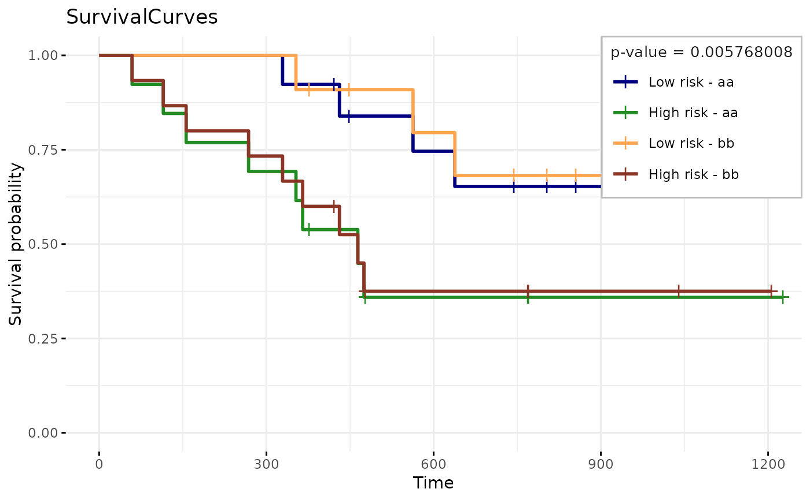

Separate data in High and Low risk groups (based on Cox model)
separate2GroupsCox.RdDraws multiple kaplan meyer survival curves (or just 1) and calculates logrank test
separate2GroupsCox(
chosenBetas,
xdata,
ydata,
probs = c(0.5, 0.5),
noPlot = FALSE,
plotTitle = "SurvivalCurves",
xlim = NULL,
ylim = NULL,
expandYZero = FALSE,
legendOutside = FALSE,
stopWhenOverlap = TRUE,
...,
chosen.btas = deprecated(),
no.plot = deprecated(),
plot.title = deprecated(),
expand.yzero = deprecated(),
legend.outside = deprecated(),
stop.when.overlap = deprecated()
)Arguments
- chosenBetas
list of testing coefficients to calculate prognostic indexes, for example
list(Age = some_vector).- xdata
n x m matrix with n observations and m variables.
- ydata
Survival object.
- probs
How to separate high and low risk patients
50%-50%is the default, but for top and bottom40%->c(.4,.6).- noPlot
Only calculate p-value and do not generate survival curve plot.
- plotTitle
Name of file if.
- xlim
Optional argument to limit the x-axis view.
- ylim
Optional argument to limit the y-axis view.
- expandYZero
expand to y = 0.
- legendOutside
If TRUE legend will be outside plot, otherwise inside.
- stopWhenOverlap
when probs vector allows for overlapping of samples in both groups, then stop.
- ...
additional parameters to survminer::ggsurvplot
- chosen.btas
![[Deprecated]](figures/lifecycle-deprecated.svg)
- no.plot
- plot.title
- expand.yzero
- legend.outside
- stop.when.overlap
Otherwise it will calculate with duplicate samples, i.e. simply adding them to xdata and ydata (in a different group).
Value
object with logrank test and kaplan-meier survival plot
A list with plot, p-value and kaplan-meier object. The plot was drawn from survminer::ggsurvplot with only the palette, data and fit arguments being defined and keeping all other defaults that can be customized as additional parameters to this function.
See also
Examples
xdata <- survival::ovarian[, c("age", "resid.ds")]
ydata <- data.frame(
time = survival::ovarian$futime,
status = survival::ovarian$fustat
)
separate2GroupsCox(c(age = 1, 0), xdata, ydata)
#> $pvalue
#> [1] 0.0518148
#>
#> $plot

#>
#> $km
#> Call: survfit(formula = survival::Surv(time, status) ~ group, data = prognosticIndexDf)
#>
#> n events median 0.95LCL 0.95UCL
#> Low risk - 1 13 4 NA 638 NA
#> High risk - 1 13 8 464 268 NA
#>
separate2GroupsCox(c(age = 1, 0.5), xdata, ydata)
#> $pvalue
#> [1] 0.0518148
#>
#> $plot
#>
#> $km
#> Call: survfit(formula = survival::Surv(time, status) ~ group, data = prognosticIndexDf)
#>
#> n events median 0.95LCL 0.95UCL
#> Low risk - 1 13 4 NA 638 NA
#> High risk - 1 13 8 464 268 NA
#>
separate2GroupsCox(
c(age = 1), c(1, 0, 1, 0, 1, 0),
data.frame(time = runif(6), status = rbinom(6, 1, .5))
)
#> $pvalue
#> [1] 0.6948866
#>
#> $plot

#>
#> $km
#> Call: survfit(formula = survival::Surv(time, status) ~ group, data = prognosticIndexDf)
#>
#> n events median 0.95LCL 0.95UCL
#> Low risk - 1 3 2 0.796 0.744 NA
#> High risk - 1 3 2 0.912 0.210 NA
#>
separate2GroupsCox(list(
aa = c(age = 1, 0.5),
bb = c(age = 0, 1.5)
), xdata, ydata)
#> $pvalue
#> [1] 0.005768008
#>
#> $plot

#>
#> $km
#> Call: survfit(formula = survival::Surv(time, status) ~ group, data = prognosticIndexDf)
#>
#> n events median 0.95LCL 0.95UCL
#> Low risk - aa 13 4 NA 638 NA
#> High risk - aa 13 8 464 268 NA
#> Low risk - bb 11 3 NA 638 NA
#> High risk - bb 15 9 464 329 NA
#>